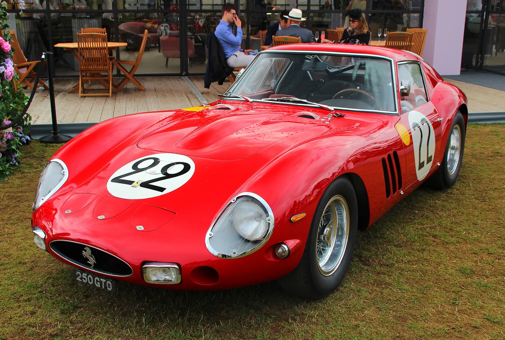
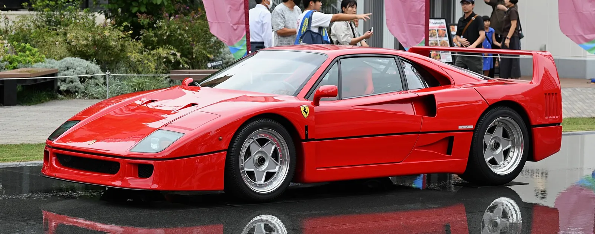
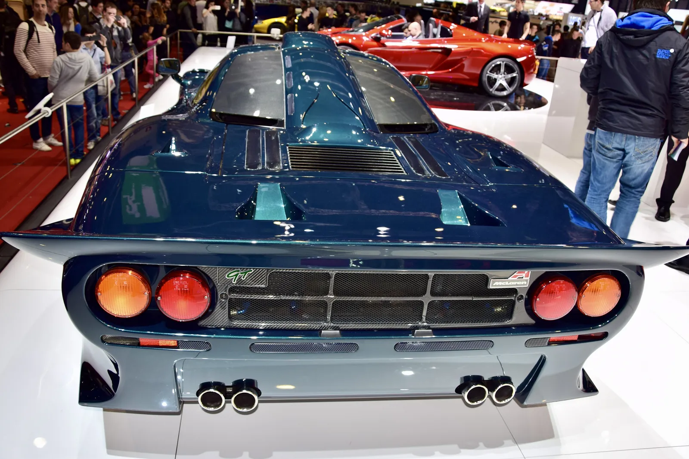
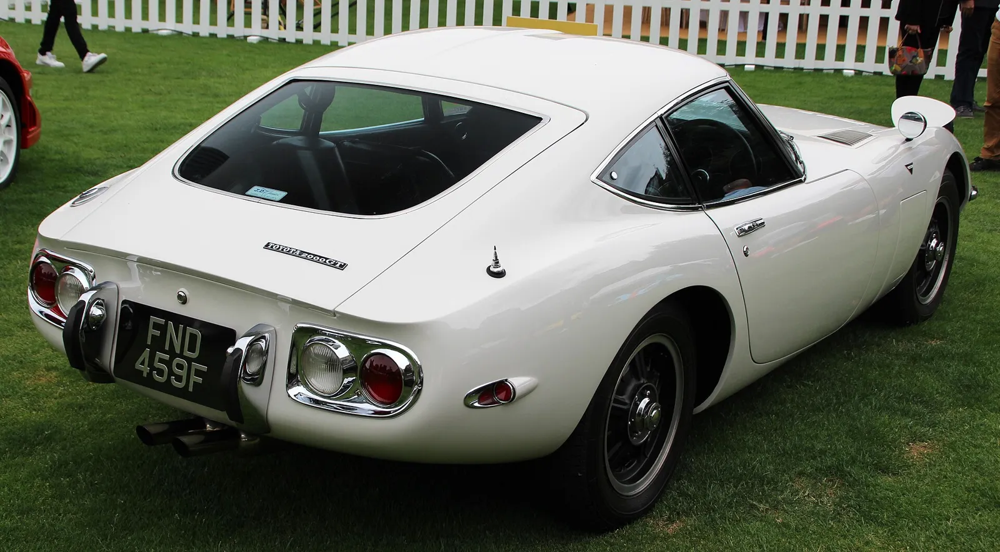
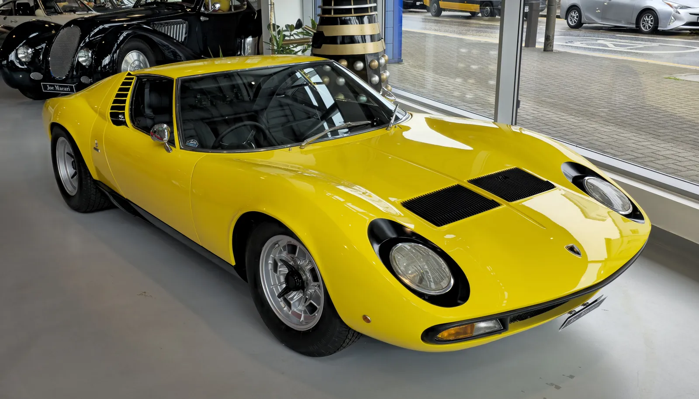

The October 2026 issue·Atlas data as of 16 October 2026·65 makes, 275 models, 508 generations·Price Watch: 166 certified auction results
On the cover · Sold at auction
Ferrari 250 GTO 1962

Thirty-six were built, and the 250 GTO became the car the whole hobby measures itself against. This one, chassis 3413 GT, is the cover because the market still starts here.
$48,405,000
Including buyer's premium (hammer $44,000,000).
RM Sotheby's Monterey, 25 August 2018
Certified result. Source: RM Sotheby's press release
- Engine
- 3.0L Colombo V12
- Power
- 300 hp
- Drive
- RWD, 5-speed manual
- Built
- 36 cars
Department
The Atlas
The encyclopedia: makes first, then the eras and shapes that cut across them.
Start with the icons
By make
By erathe atlas by time
By shape
Department
The Price Watch
Completed auction results, each certified against a published source. A result is one car on one day: context, not a valuation.
Certified resultsnewly sold first
Department
The Journal
Notes from the record: prices, provenance, and the paper trail.
Collector note
Ferrari F40 (1987–1992)
Regularly trades in the $3M-plus range in recent years.

Collector note
McLaren F1 (1992–1998)
The centre of the modern collector market, eight-figure prices are the norm and the best cars trade privately.

Collector note
Toyota 2000GT (1967–1970)
Seven-figure cars when they trade at all, most of the 351 sit in collections.

Collector note
Lamborghini Miura (1966–1973)
Good cars trade in the millions; SVs are the top of the market.

Collector note
Jaguar E-Type (1961–1975)
Early flat-floor, outside-bonnet-latch Series 1 cars top the market at auction.
Buying one? Start with where the market actually trades.
The buying layer maps every model to the channels that set its price. No listings faked, no prices invented.
Open the buying layer →Find your people.
Car culture is local. The clubs registry covers marque clubs, motorsport bodies, and meet networks by region.
All clubs →